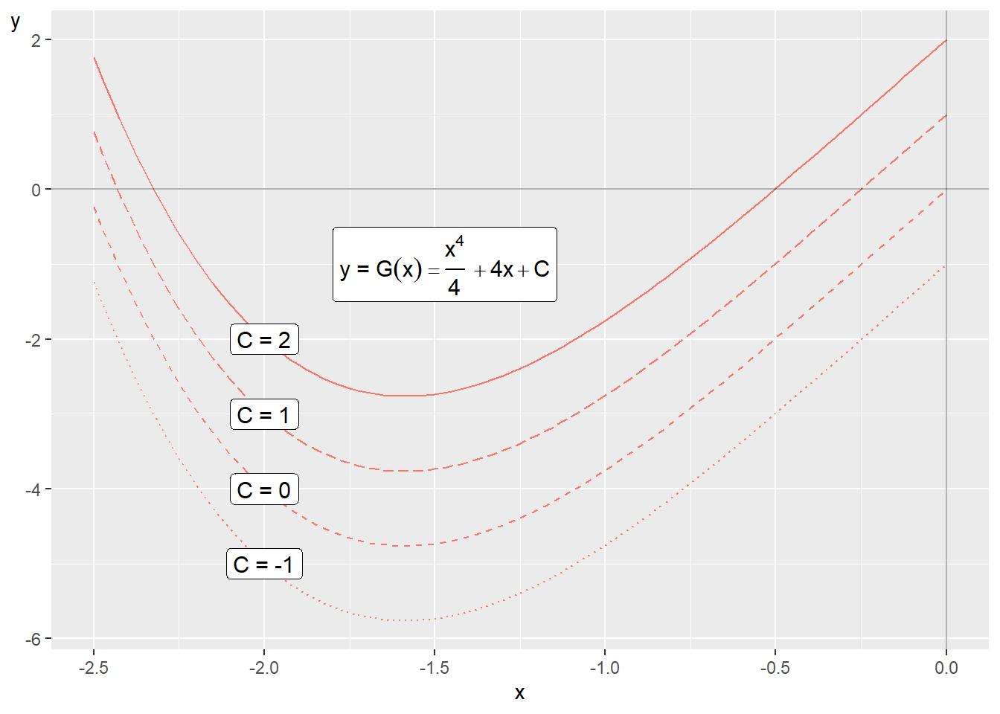
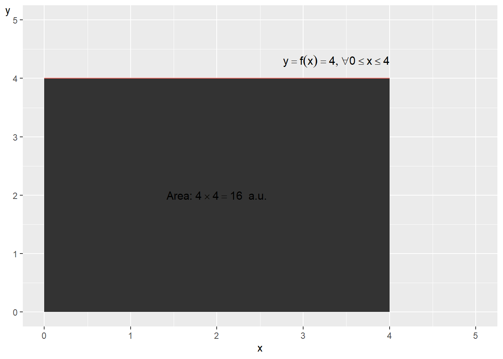
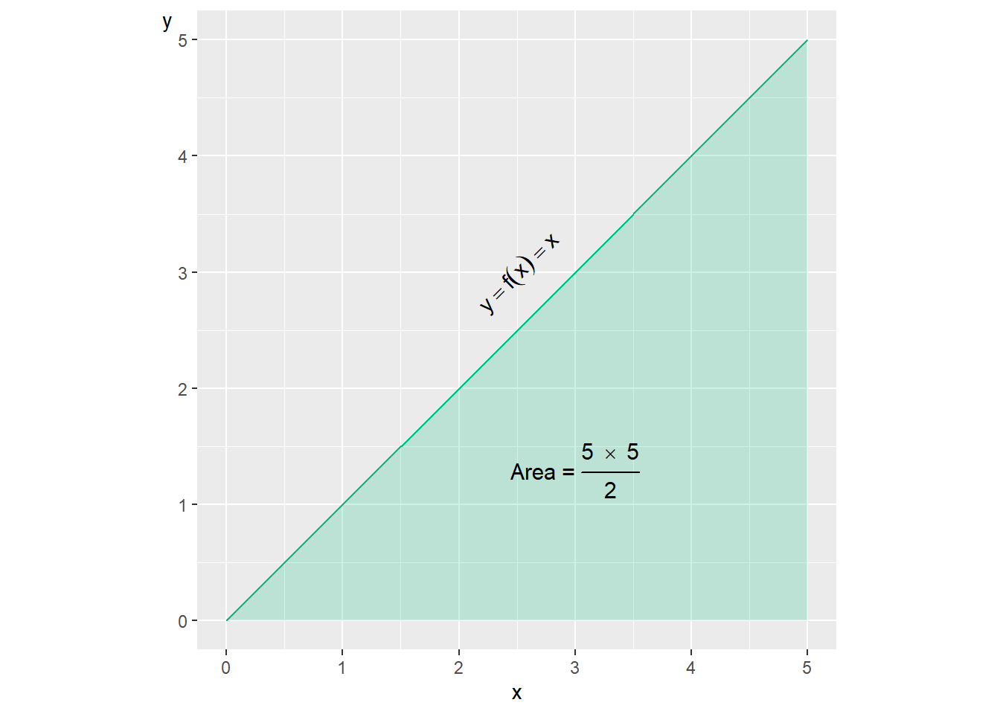
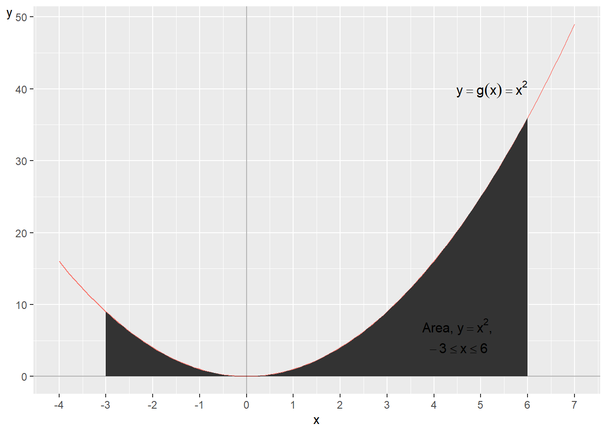
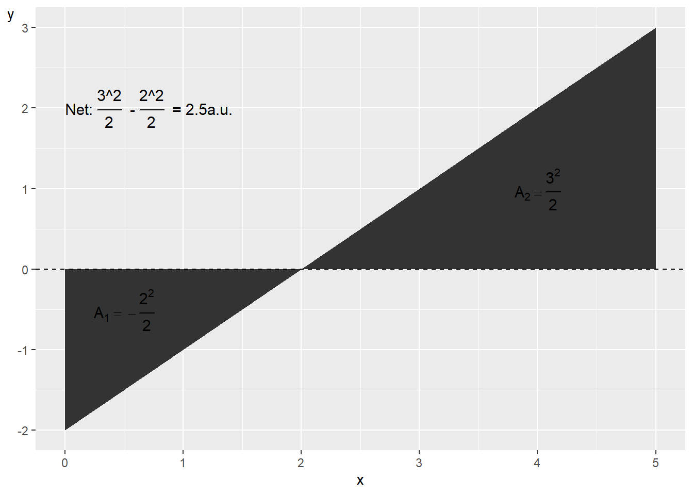
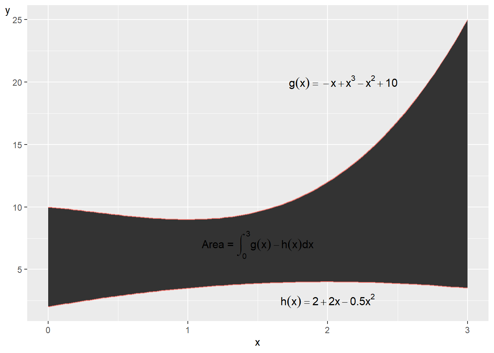
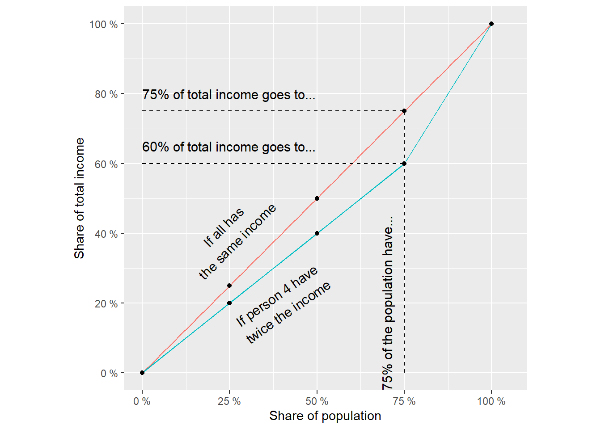
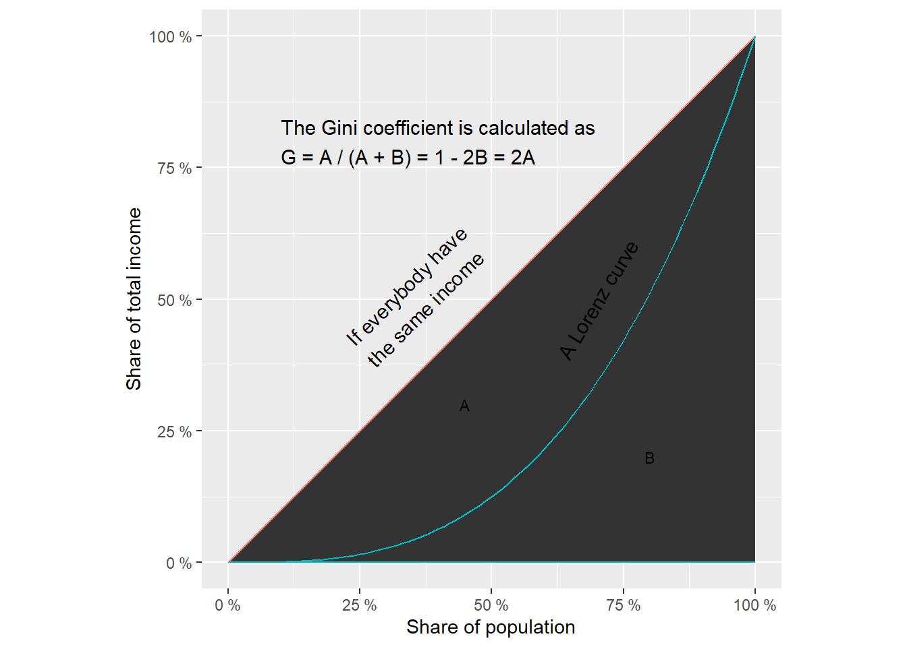
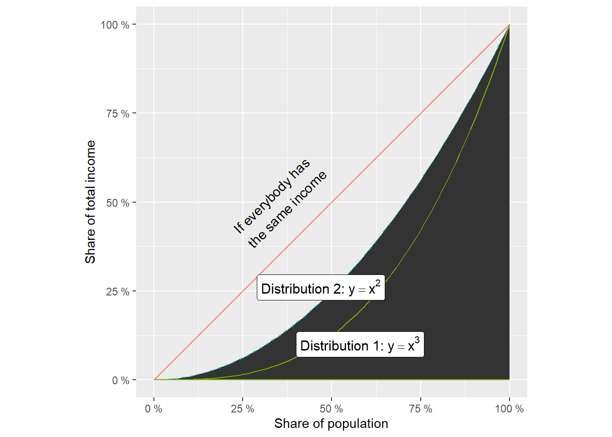

Chapter 13 Integration
This chapter introduces integration, also called integrating. Integration can be described as finding a function’s “anti-derivative”. Integrals can among other things be used to calculate the area between two lines in a graph, or the volume and mass of an object. This we can in turn use for describing theories and calculate probability, which is a central aspect of all empirical analysis.
13.1 The primitive function
Suppose we have a function \(f'_{x}\) which is the derivative of function \(F\) with respect to the variable \(x\). With integration we seek a function \(F\) whose derivative gives \(f'_{x}\). The function we then get through integration is called integral. Function \(F\) is the integral to function \(f\), and function \(f\) is the integrand. Consider the following function \(F\) of \(x\):
\[ \begin{equation} F\left(x\right)=x^{a}+b \tag{13.1} \end{equation} \]
where \(a\) and \(b\) are constants. Taking the derivative of \(F\) with respect to \(x\):
\[ \begin{equation} \frac{d}{dx}F\left(x\right)=f'_{x}\left(x\right)=ax^{a-1} \tag{13.2} \end{equation} \]
Function \(F\) is the primitive function to \(f'_{x}\). Another expression for primitive function is indefinite integral, which is described more thoroughly below. The primitive function is the function whose derivative gives us the function \(f'_{x}\). If we are to calculate the integral of function \(F\left(x\right)\) in equation (13.1) we instead seek a primitive function to function \(F\). The derivative of the primitive function we in that case seek should result in function \(F\).
Integration is often described with two symbols: \(\int\) and the letters \(dx\), where \(x\) is the variable that the integration should be performed with respect to. The expression \(dx\) can be read as “with respect to variable \(x\)”. The description of the integral of a function \(f\left(x\right)\) can be written in different ways:
\[ \begin{align} \int\left(f\left(x\right)\right)dx & =\int f\left(x\right)dx=\int dxf\left(x\right) \end{align} \]
The mathematical meaning in these three ways of writing is the same. The three expressions can all be read as “the integral of function \(f\left(x\right)\), with respect to variable \(x\)”. We may also write out the function \(f\left(x\right)\) to clarify which expression we seek an integral for. Taking the definition of \(f\left(x\right)\) from equation (13.1) and insert between the symbols \(\int\) and \(dx\):
\[ \begin{equation} \int f\left(x\right)dx=\int\left(x^{a}+b\right)dx \end{equation} \]
In function \(f\left(x\right)\) we have two terms that should be integrated: \(x^{a}\) and \(b\). When we differentiate we subtract 1 from the exponent. When we integrate we instead add 1. For the first term, \(x^{a}\), we integrate by adding 1 to the exponent: \(x^{a+1}\). We also divide the same term by the new exponent \(\left(a+1\right)\). The integral of \(x^{a}\) is:
\[ \begin{equation} \int\left(x^{a}\right)dx=\frac{x^{a+1}}{a+1} \end{equation} \]
That we divide by \(a+1\) means that when differentiating the integral we will get back \(x^{a}\) as result. Let us check this by taking the derivative of the expression \(\frac{x^{a+1}}{a+1}\) with respect to x:
\[ \begin{align} \left(\frac{x^{a+1}}{a+1}\right)'_{x}=\frac{\left(a+1\right)x^{a+1-1}}{a+1}=x^{a} \end{align} \]
The exponent moves down from \(x\) in front of the expression. Since the expression is divided by the same exponent we cancel these. The next term in equation (13.1) is the constant b. When we integrate we add \(x\) to terms that consist only of constants. The next term in our integral therefore becomes \(bx\):
\[ \begin{equation} \int\left(b\right)dx=bx \end{equation} \]
Last in the integral we add another constant that we call \(C\). This because when differentiating we cancel the terms where the current variable is not included. The constant \(C\) thus represents an arbitrary number, for example all conceivable constants that could be included in a primitive function to \(f\left(x\right)\). We now get the following primitive function that we call \(F\):
\[ \begin{align} F\left(x\right) & =\int\left(f\left(x\right)\right)dx=\int\left(x^{a}+b\right)dx=\frac{x^{a+1}}{a+1}+bx+C \tag{13.3} \end{align} \]
\(F\left(x\right)\) is a primitive function, the integral, to \(f\left(x\right)\) in equation (13.1) . We check the integral by differentiating \(F\left(x\right)\) with respect to \(x\):
\[ \begin{align} F\left(x\right)'_{x} & =\frac{\partial}{\partial x}\left[\frac{x^{a+1}}{a+1}+bx+C\right]=\frac{a+1}{a+1}x^{a}+b=x^{a}+b \end{align} \]
This results in the same expression as function \(f\left(x\right)\) in equation (13.1) , which indicates that our integral was correct. With the same method we can also integrate longer equations with several terms. As long as each term, separated by addition and subtraction, has similar form as above we can use the same method for each term separately.
Let us now take the function:
\[ \begin{equation} h\left(x\right)=x^{3}+2x^{2}+4x \tag{13.4} \end{equation} \]
A primitive function for \(h\left(x\right)\) is \(H\left(x\right)\):
\[ \begin{align} H\left(x\right) & =\int h\left(x\right)dx\\ & =\int\left(x^{3}+2x^{2}+4x\right)dx\nonumber \\ & =\frac{x^{4}}{4}+\frac{2x^{3}}{3}+\frac{4x^{2}}{2}+C\nonumber \end{align} \]
The derivative of function \(H\) with respect to \(x\) becomes function \(h\) in equation (13.4) :
\[ \begin{equation} H'_{x}\left(x\right)=x^{3}+2x^{2}+4x=h\left(x\right) \end{equation} \]
13.2 The meaning of constant \(\boldsymbol{C}\)
By definition there are infinitely many primitive functions to a function \(f\left(x\right)\). To see this we take the following function as an example:
\[ \begin{equation} y=f\left(x\right)=2x \tag{13.5} \end{equation} \]
A primitive function to \(f\) can look like this:
\[ \begin{equation} F_{1}\left(x\right)=x^{2} \tag{13.6} \end{equation} \]
Or like this:
\[ \begin{equation} F_{2}\left(x\right)=x^{2}+5 \tag{13.7} \end{equation} \]
Or like this:
\[ \begin{equation} F_{3}\left(x\right)=x^{2}+123+a^{4} \end{equation} \]
where \(a\) is a constant coefficient (or a variable) that we do not differentiate over. If we differentiate the functions \(F_{1}\left(x\right)\), \(F_{2}\left(x\right)\) and \(F_{3}\left(x\right)\), the result in all three cases becomes \(y=2x\). To handle this when we calculate integrals we always assume that a constant that we call \(C\) is included in all primitive functions. Let us now take the following function as an example:
\[ \begin{equation} g\left(x\right)=x^{3}+4 \end{equation} \]
The integral of this function, which we call \(G\left(x\right)\):
\[ \begin{align} G\left(x\right) & =\int g\left(x\right)dx=\int\left[x^{3}+4\right]dx=\frac{x^{4}}{4}+4x+C \end{align} \]
The derivative of function \(G\) with respect to x again gives function \(g\left(x\right)\):
\[ \begin{equation} G'_{x}=x^{3}+4 \end{equation} \]

Figure 13.1: The primitive function \(G\left(x\right)\) with different constants \(C\)
In function \(G\left(x\right)\), which is the integral to \(g\left(x\right)\), a constant \(C\) is again included. Since \(C\) can be any value the integral \(F\left(x\right)\) can assume infinitely many different definitions, depending on the value for \(C\). Figure 13.1 illustrates some examples of the function \(G\left(x\right)\) and the meaning of \(C\). In the graph four lines are drawn with the function:
\[ \begin{equation} y=G\left(x\right)=\frac{x^{4}}{4}+4x+C \end{equation} \]
The four lines have different values for the constant \(C:-1,0,1\) and 2 respectively.
13.3 Primitive function with conditions
Primitive functions can also be combined with conditions. Say for example that we have the function:
\[ \begin{equation} t\left(x\right)=3x+5 \end{equation} \]
and seek an expression for its primitive function given the condition that \(T\left(0\right)=2\), which means that the primitive function \(T\left(x\right)\) equals 2 when \(x=0\). Another way to say the same thing is that \(T\left(x\right)\) passes through the point \(\left(0,2\right)\). The primitive function to \(t\left(x\right)\) is:
\[ \begin{equation} T\left(x\right)=\frac{3x^{2}}{2}+5x+C \end{equation} \]
The constant \(C\) can be any number but in this case there is only one version of function \(T\left(x\right)\) that fulfills the condition \(T\left(0\right)=2\):
\[ \begin{align} T\left(x\right)_{1} & =\frac{3x^{2}}{2}+5x+2 \end{align} \]
In this function, which fulfills the condition, \(C=2\). That \(T_{1}\left(x\right)\) fulfills the condition \(T\left(0\right)=2\) we can see by calculating \(T_{1}\left(x=0\right):\)
\[ \begin{align} T\left(0\right)_{1} & =\frac{3\left(0\right)^{2}}{2}+5\left(0\right)+2=2 \end{align} \]
13.4 Primitive function for an exponent
In section 10.5 we went through how we may differentiate exponential functions such as:
\[ \begin{align} \left[e^{x}\right]'_{x} & =e^{x},\; & \frac{\partial}{\partial x}\left[e^{ax}\right]=ae^{ax} \end{align} \]
where \(x\) is the included variable, \(e\) is Euler’s number and \(a\) is constant. We see among other things that the function \(f\left(x\right)=e^{x}\) has derivative \(f'_{x}\left(x\right)=e^{x}\). With this in mind we shall now go through how we can find a primitive function when we have \(x\) as exponent in a power expression. Let us start with the function:
\[ \begin{equation} f\left(x\right)=e^{x} \end{equation} \]
We shall now derive a primitive function for this:
\[ \begin{align} \int f\left(x\right)dx & =F\left(x\right)=e^{x}+C \end{align} \]
The letter \(C\) is a constant. If we take the derivative of \(F\) with respect to \(x\) we get:
\[ \begin{equation} F'_{x}\left(x\right)=e^{x} \end{equation} \]
This is the same thing as \(f\left(x\right)\). Let us also take the integral of a function of the type \(g\left(x\right)=e^{ax}\). The integral to this function we call \(G\left(x\right)\):
\[ \begin{align} G\left(x\right) & =\int g\left(x\right)dx=\int e^{ax}dx=\frac{e^{ax}}{a}+C \end{align} \]
Just as in the examples in the previous section we add the denominator \(a\) to the term \(e^{ax}\) so that the derivative of the primitive function \(G\left(x\right)\) becomes \(g\left(x\right)\). Let us differentiate the function \(G\left(x\right)\) with respect to \(x\):
\[ \begin{equation} G'_{x}=a*\frac{e^{ax}}{a}=e^{ax} \end{equation} \]
This is the same thing as \(g\left(x\right)\). In section 10.5 we also went through the derivative of \(a^{x}\) where a is an arbitrary constant and x is variable:
\[ \begin{equation} \left[a^{x}\right]'_{x}=a^{x}\ln a \end{equation} \]
If the base \(a=e\)(Euler’s number) and we have function \(h\left(x\right)=a^{x}\), the derivative is:
\[ \begin{equation} h\left(x\right)'_{x}=a^{x}\ln a=a^{x}=e^{x} \end{equation} \]
Let us now derive a primitive function for the function \(h\left(x\right)=a^{x}\). According to the same logic as above we now add a denominator and a constant \(C\) and then get the following primitive function:
\[ \begin{align} H\left(x\right) & =\int h\left(x\right)dx=\int\left(a^{x}\right)dx=\frac{a^{x}}{\ln a}+C \end{align} \]
Let us illustrate these rules with two examples where we write out numbers instead of letters. Suppose we have the following function:
\[ \begin{equation} q\left(x\right)=e^{12x}+5 \end{equation} \]
Now we seek a primitive function for \(q\left(x\right)\), which we call \(Q\left(x\right)\):
\[ \begin{equation} Q\left(x\right)=\frac{e^{12x}}{12}+5x+C \end{equation} \]
Since \(C\) is a general term this is called that we have determined all primitive functions for \(q\left(x\right)\). Let us take another example with several terms. This time we seek a primitive function for the function:
\[ \begin{equation} v\left(x\right)=3^{x}+e^{2x}+4+\frac{x^{3}}{2} \end{equation} \]
The integral to the function \(v\left(x\right)\) we call \(V\left(x\right)\):
\[ \begin{align} V\left(x\right) & =\int v\left(x\right)dx\\ & =\int\left[3^{x}+e^{2x}+4+\frac{x^{3}}{2}\right]dx\nonumber \\ & =\frac{3^{x}}{\ln\left(3\right)}+\frac{e^{2x}}{2}+4x+\frac{x^{4}}{8}+C\nonumber \end{align} \]
Note how we in this example on the third line take the opportunity to use several different rules that we have introduced earlier.
13.5 Calculate area with integral
Integrals can among other things be used to calculate an area, for example the area between the line for a function and the horizontal x-axis, or the area between the lines in a graph. Let us start with how we calculate the area in a graph without integral for the following function:
\[ \begin{equation} y=f\left(x\right)=4,\forall0\leq x\leq4 \tag{13.8} \end{equation} \]
The function \(f\left(x\right)\) equals 4 for all values of \(x\) between 0 and 4. The line for this function is horizontal. The area between this line and the x-axis:
\[ \begin{align} \text{width }\times\text{ height} & =\text{area}\\ 4\times4 & =16\text{ area units}\nonumber \tag{13.9} \end{align} \]

Figure 13.2: The area under the function \(y=f\left(x\right)=4,\forall0\leq x\leq4\)

Figure 13.3: The function \(y=f\left(x\right)=x\) and the area under the line
The expression area units, a.u., is a general concept that we use since we have not specified any unit of measurement for \(x\) and \(y\). Area units can for example be square centimeters or square meters. The function in equation (13.8) and the area under the line is illustrated in figure 13.2 . If we instead have the function:
\[ \begin{equation} y=h\left(x\right)=x,\forall0\leq x\leq5 \tag{13.10} \end{equation} \]
this is, in a graph, a straight line between \(\left(0,0\right)\) and \(\left(5,5\right)\). The area for the surface under the line down to the x-axis is then:
\[ \begin{align} \text{Area} & =\frac{\text{height}\times\text{width}}{2}=\frac{5\times5}{2}=12.5\text{ a.u.} \end{align} \]
The function and the area are illustrated in figure 13.3 . Let us now calculate the area for these two examples with the help of integrals. We start with the function \(y=f\left(x\right)=4\). The integral for function f:
\[ \begin{equation} F\left(x\right)=4x+C \end{equation} \]
where \(C\) is an arbitrary constant. To calculate the area we derive the primitive function over the interval 0 to 4. We calculate the area by taking the integral for \(f\left(x\right)\) over the values \(a\) and \(b\), 0 to 4. This integral is written \(\int_{a}^{b}\):
\[ \begin{align} \int_{a}^{b}f\left(x\right)dx & =\left[F\left(x\right)\right]_{a}^{b}=F\left(b\right)-F\left(a\right) \end{align} \]
We calculate the integral from the smaller to the larger value. The expression \(\left[F\left(x\right)\right]_{a}^{b}\) means that we calculate the primitive function for a and b, which is then set up as \(F\left(b\right)\) minus \(F\left(a\right)\). We set up the equation with the integral with the higher value as input value, minus the integral with the lower value. In this case we have \(a=0\) and \(b=4\):
\[ \begin{align} \int_{0}^{4}f\left(x\right)dx & =F\left(4\right)-F\left(0\right)\\ & =\left(4\left(4\right)+C\right)-\left(4\left(0\right)+C\right)\nonumber \\ & =16\nonumber \end{align} \]
This is the same result as we found in equation (13.9) . The constant \(C\) is written out in both equations but since we get a positive and a negative \(C\) both can be canceled. Let us now take the integral to the function \(y=h\left(x\right)=x\):
\[ \begin{align} H\left(x\right) & =\int h\left(x\right)dx=\int\left[x\right]dx=\frac{x^{2}}{2}+C \end{align} \]
To calculate the area:
\[ \begin{equation} \int_{a}^{b}h\left(x\right)dx=H\left(b\right)-H\left(a\right) \end{equation} \]
We now have \(b=5\) and \(a=0\):
\[ \begin{align} \int_{0}^{5}h\left(x\right)dx & =\int_{0}^{5}\left[x\right]dx\\ & =H\left(5\right)-H\left(0\right)\nonumber \\ & =\left(\frac{\left(5\right)^{2}}{2}+C\right)-\left(\frac{\left(0\right)^{2}}{2}+C\right)\nonumber \\ & =12.5\nonumber \end{align} \]
This is the same result as the answer we got above. As long as the integral lacks integration limits, that is an interval for x, this is called an indefinite integral. When we specify the interval for \(x\), as in this case \(\int_{0}^{5}\), this is called a definite integral.
Let us now take the function:
\[ \begin{equation} y=g\left(x\right)=x^{2} \tag{13.11} \end{equation} \]
Its integral is:
\[ \begin{align} G\left(x\right) & =\int\left(x^{2}\right)dx=\frac{x^{3}}{3}+C \end{align} \]

Figure 13.4: The function \(y=f\left(x\right)=x^{2}\)
We shall now calculate the area for \(G\left(x\right)\) for the values \(-3\leq x\leq6\):
\[ \begin{equation} G\left(x\right)=\int_{-3}^{6}g\left(x\right)dx \end{equation} \]
Our integral has the boundary values \(x=-3\) and \(x=6\). Since the integral has a specified interval for \(x\) this means that this is a definite integral:
\[ \begin{align} G\left(x\right) & =\int_{-3}^{6}g\left(x\right)dx=\left[G\left(x\right)\right]_{-3}^{6}=G\left(6\right)-G\left(-3\right) \end{align} \]
\(G\left(6\right)\) and \(G\left(-3\right)\) is the primitive functions for \(x=6\) and \(x=-3\):
\[ \begin{align} \int_{-3}^{6}g\left(x\right)dx & =G\left(6\right)-G\left(-3\right)\\ & =\left(\frac{1}{3}\left(6\right)^{3}+C\right)-\left(\frac{1}{3}\left(-3\right)^{3}+C\right)\nonumber \\ & =\frac{216}{3}+C-\frac{\left(-27\right)}{3}-C\nonumber \\ & =63\text{ a.u.}\nonumber \end{align} \]
In row 3 we set the function \(G\left(x=6\right)\) as positive term and \(G\left(x=-3\right)\) as negative term. Figure 13.4 illustrates the line to the function \(y=x^{2}\) and the area between the horizontal x-axis and the function’s line for \(-3\leq x\leq6\).
13.6 The area under the x-axis
So far we have only calculated the area for lines above the x-axis. But as we have seen in previous examples functions can also have negative y-values, whereupon the lines pass below the x-axis. The form for definite integrals that we used above is defined in such a way that it calculates the area between a line and the horizontal x-axis:
\[ \begin{equation} \int_{b}^{a}f\left(x\right)dx=F\left(b\right)-F\left(a\right) \end{equation} \]
The area between the x-axis and a line above the x-axis becomes a positive value. The area between the x-axis and a line below the x-axis becomes a negative value. If we calculate the area based on a function that both passes above and below the x-axis we get the net area. For example:
\[ \begin{align*} \int_{0}^{5}\left[-2+x\right]dx & =F\left(5\right)-F\left(0\right)\\ & =\left(-2\left(5\right)+\frac{\left(5\right)^{2}}{2}\right)-\left(-2\left(0\right)+\frac{\left(0\right)^{2}}{2}\right)\\ & =\left(-10+12.5\right)\\ & =2.5 \end{align*} \]
The function and the two surfaces are illustrated in figure 13.5 where the first area \(\left(A_{1}\right)\) is the surface below the x-axis, which equals \(-2\). The second area \(\left(A_{2}\right)\) is the surface above the x-axis, which equals 4.5. The net result is thus the area for the part that is above \(x\) minus the surface that is below \(x\).

Figure 13.5: Area above and under the \(x\) -axis
Suppose we instead want to calculate all surface between the function’s line and the x-axis, regardless of whether the line is above or below the x-axis, and sum this area to one value. In that case we divide the integral and put a minus sign for the part that is below the x-axis. We divide the integral at the value for \(x\) where the line intersects the x-axis, which is where \(y=f\left(x\right)=0\). We start by calculating the x-value we seek:
\[ \begin{align} -2+x & =0\\ x^{*} & =2\nonumber \end{align} \]
Then we divide the integral into two parts and put a minus sign in front of the part that is below the x-axis:
\[ \begin{equation} \text{Total area:}-\int_{0}^{2}f\left(x\right)dx+\int_{2}^{5}f\left(x\right)dx \end{equation} \]
Now we calculate the two integrals and sum:
\[ \begin{align} -\int_{0}^{2}f\left(x\right)dx+\int_{2}^{5}f\left(x\right)dx & =-\left[-2x+\frac{x^{2}}{2}\right]_{0}^{2}+\left[-2x+\frac{x^{2}}{2}\right]_{2}^{5}\\ & =-\left[-4+2\right]+\left[\left(-10+12,5\right)-\left(-4+2\right)\right]\nonumber \\ & =6,5\nonumber \end{align} \]
The total area between the line and the x-axis is 6.5 area units.
13.7 The area between two lines
Integrals can also be used to calculate the area between two curves. Suppose we have the following two continuous functions \(g\left(x\right)\) and \(h\left(x\right)\):
\[ \begin{align} g\left(x\right)= & -x+x^{3}-x^{2}+10\\ h\left(x\right)= & 2+2x-\frac{1}{2}x^{2}\nonumber \tag{13.12} \end{align} \]
Over an interval of x-values \(\left[a,b\right]\) is \(g\left(x\right)\geq h\left(x\right)\). The area \(A\) is bounded for this interval upward by \(g\left(x\right)\) and downward by \(h\left(x\right)\) and can be calculated as:
\[ \begin{equation} A=\int_{a}^{b}\left[g\left(x\right)-h\left(x\right)\right]dx \tag{13.13} \end{equation} \]
Lines and the area are illustrated in figure 13.6 . We shall now calculate the area between these for \(0\leq x\leq3\) and therefore set up equation (13.13) with the functions from equation (13.12) and calculate the integral:
\[ \begin{align} \int_{0}^{3}g\left(x\right)-h\left(x\right)dx & =\int_{0}^{3}\left[-x+x^{3}-x^{2}+10-\left(2+2x-\frac{1}{2}x^{2}\right)\right]dx\\ & =\int_{0}^{3}\left[x^{3}-\frac{1}{2}x^{2}-3x+8\right]dx\nonumber \\ & =\left[\frac{x^{4}}{4}-\frac{x^{3}}{6}-\frac{3x^{2}}{2}+8x\right]_{0}^{3}\nonumber \\ & =\left(\frac{3^{4}}{4}-\frac{3^{3}}{6}-\frac{3\left(3\right)^{2}}{2}+8\left(3\right)\right)-\left(\frac{0^{4}}{4}-\frac{0^{3}}{6}-\frac{3*0^{2}}{2}+8*0\right)\nonumber \\ & =20.25+4.5-13.5+24\nonumber \\ & =44.25\text{ a.u.}\nonumber \end{align} \]

Figure 13.6: The area between two functions
13.8 Integration rules
Table 13.1 describes integrals for some commonly occurring functions, several of which we have gone through above. The calculation rule in the fourth row that proceeds from function \(f\left(x\right)=\frac{1}{x}\) describes how the derivative of \(\log_{b}x=\frac{1}{x\ln b}\)(section10.5 ). When the base \(b=\) Euler’s number \(\left(e\right)\), the derivative of \(\ln x=1/x\)(see equation (10.11) and (10.12) ). Now we shall use the latter to calculate the primitive function of \(1/x\). The integral of \(1/x\) equals the natural logarithm of the absolute value of \(x\), plus the constant \(C\):
\[ \begin{equation} \int\frac{1}{x}dx=\ln\left|x\right|+C \end{equation} \]
| Function \(f\left(x\right)\) | Integral \(\int f\left(x\right)dx\) | |
|---|---|---|
| 1 | \(x^{a},\,a\neq-1\) | \(\frac{x^{a+1}}{a+1}+C\) |
| 2 | \(x^{-2}=\frac{1}{x^{2}}\) | \(\frac{x^{-1}}{-1}+C\) |
| 3 | \(\frac{1}{x}\) | \(\ln\left|x\right|+C\) |
| 4 | \(\frac{1}{ax+b}\) | \(\frac{1}{a}\ln\left|ax+b\right|+C\) |
| 5 | \(e^{x}\) | \(e^{x}+C\) |
| 6 | \(e^{kx}\) | \(\frac{e^{kx}}{k}+C\) |
| 7 | \(a^{x}\) | \(\frac{a^{x}}{\ln a}+C\) |
| 8 | \(\ln x\) | \(x\ln x-x+C\) |
The reason for the absolute value is that \(1/x\) holds for all real numbers except \(x=0\), while \(\ln x\) is only defined for \(x>0\), see chapter 5 . The fourth calculation rule describes the integral:
\[ \begin{equation} \int\left(\frac{1}{ax+b}\right)dx=\frac{1}{a}\ln\left|ax+b\right|+C \tag{13.14} \end{equation} \]
where \(a\) and \(b\) are constants. This we see from the chain rule for derivative of composite functions, which gives that \(\left(f\circ g\right)'_{x}=g'\left(f'\circ g\right)\), see table 10.2 . Let us consider the natural logarithm as function \(f\) and \(ax+b\) as function \(g\). Now we shall calculate the derivative of the following expression:
\[ \begin{equation} \frac{1}{a}\ln\left(ax+b\right) \end{equation} \]
We rewrite this in the following way:
\[ \begin{align} \left(\frac{1}{a}\ln\left(ax+b\right)\right)'_{x} & =\frac{1}{a}\left(f\circ g\right)'_{x}\\ & =\frac{1}{a}g'_{x}\left(f'_{x}\circ g\right)\nonumber \\ & =\frac{1}{a}\left(ax+b\right)'_{x}\left(\ln\left(ax+b\right)\right)'_{x}\nonumber \\ & =\frac{1}{a}\left(a\right)\left(\frac{1}{ax+b}\right)+0\nonumber \\ & =\frac{1}{ax+b}\nonumber \end{align} \]
| Integral | Can also be written as | |
|---|---|---|
| 1 | \(\int af\left(x\right)dx\), where \(a\) is a constant | \(a\int f\left(x\right)dx\) |
| 2 | \(\int\left(f+g\right)dx\) | \(\int f\left(x\right)dx+\int g\left(x\right)dx\) |
| 3 | \(\int\left(f-g\right)dx\) | \(\int f\left(x\right)dx-\int g\left(x\right)dx\) |
Table 13.2 describes some common rules for integrals. The first rule describes how we can factor out the constant a from the integral \(\int f\left(x\right)dx\), since \(a\) is not affected by the integration. We illustrate with the function:
\[ \begin{equation} f\left(x\right)=4x^{2}+16x \end{equation} \]
The integral of \(f\):
\[ \begin{equation} F\left(x\right)=\frac{4x^{3}}{3}+8x^{2}+C \end{equation} \]
Now we rewrite \(f\) so we get \(4\left(x^{2}+4x\right)\) and call the content in the parentheses \(g\left(x\right)\). If we take the integral of this we get:
\[ \begin{equation} G\left(x\right)=\frac{x^{3}}{3}+2x^{2}+C \end{equation} \]
From here we see that \(4G\left(x\right)=F\left(x\right)\), which is what the first calculation rule in table 13.2 describes. The other two integration rules can also be illustrated with function \(f\left(x\right)=4x^{2}+16x\). Suppose we divide this function into the two functions:
\[ \begin{equation} h\left(x\right)=4x^{2},\quad k\left(x\right)=16x \end{equation} \]
Their respective integrals are then:
\[ \begin{equation} H\left(x\right)=\frac{4x^{3}}{3}+C,\quad K\left(x\right)=8x^{2}+C \end{equation} \]
From this we see that \(H+K=F\). If we sum the two constants \(C\) and \(C\) in the functions \(H\) and \(K\) we get a new arbitrary constant, which has the same meaning for the integrals and is not affected by the integration. This is what the second calculation rule in table 13.2 describes.
The third calculation rule is a variant of the second calculation rule. In a similar way as above we check that the following holds::
\[ \begin{equation} \int\left(h-k\right)dx=\int\left(4x^{2}-16x\right)dx=\frac{4x^{3}}{3}-8x^{2}+C=H-K \end{equation} \]
which confirms the third rule. For definite integrals we may also describe some additional rules. Given that \(f\) is a continuous function over an interval where the values \(a,\,b,\,c\) are included the following holds for definite integrals:
\[ \begin{equation} \begin{aligned} \int_{a}^{b}f\left(x\right)dx & =-\int_{b}^{a}f\left(x\right)dx\\ \int_{a}^{a}f\left(x\right)dx & =0\\ \int_{a}^{c}f\left(x\right)dx & =\int_{a}^{b}f\left(x\right)dx+\int_{b}^{c}f\left(x\right)dx \end{aligned} \tag{13.15} \end{equation} \]
The first of these rules says that if we take the integral over an interval from \(a\) to \(b\), it corresponds to the same value but negative if we take the integral from \(b\) to \(a\) instead. If we take the following function as an example:
\[ \begin{equation} y=f\left(x\right)=x^{3}+4 \end{equation} \]
We calculate its integral:
\[ \begin{align} \int_{1}^{2}f\left(x\right)dx & =\left[\frac{x^{4}}{4}+4x\right]_{1}^{2}=\left(4+8\right)-\left(\frac{1}{4}+4\right)=7+\frac{3}{4} \end{align} \]
This means that:
\[ \begin{align} -\int_{2}^{1}f\left(x\right)dx & =-\left[\frac{x^{4}}{4}+4x\right]_{2}^{1}\\ & =-\left(\left(\frac{1}{4}+4\right)-\left(4+8\right)\right)\nonumber \\ & =7+\frac{3}{4}\nonumber \end{align} \]
The second calculation rule means:
\[ \begin{align} \int_{a}^{a}f\left(x\right)dx= & F\left(a\right)-F\left(a\right)=0 \end{align} \]
The third calculation rule means that if we have a continuous function where the values a,b,c are included within an interval the integral can be divided into two integrals and give the same result as if we had taken the integral over the entire interval directly. We will illustrate this with the following example where the integral to the left sums the variable \(x\) over the interval \(\left[1,3\right]\) and the two integrals in the right side sum \(x\) the interval \(\left[1,2\right]\) as well as the interval \(\left[2,3\right]\):
\[ \begin{align} \int_{1}^{3}x^{2}dx= & \int_{1}^{2}x^{2}dx+\int_{2}^{3}x^{2}dx\\ \left[\frac{x^{3}}{3}\right]_{1}^{3}= & \left[\frac{x^{3}}{3}\right]_{1}^{2}+\left[\frac{x^{3}}{3}\right]_{2}^{3}\nonumber \\ 9-\frac{1}{3}= & \left(\frac{8}{3}-\frac{1}{3}\right)+\left(9-\frac{8}{3}\right)\nonumber \\ 8+\frac{2}{3}= & 8+\frac{2}{3}\nonumber \end{align} \]
Both sides give the same final result.
13.9 More examples
We shall now calculate the primitive function for the following function:
\[ \begin{equation} f\left(x\right)=x+12 \end{equation} \]
The primitive function for \(f\) is:
\[ \begin{align} F\left(x\right) & =\int\left(x+12\right)dx\\ & =\frac{1}{2}x^{1+1}+12*x+C\nonumber \\ & =\frac{x^{2}}{2}+12x+C\nonumber \end{align} \]
If we instead have the following function:
\[ \begin{equation} f\left(x\right)=4x^{2}+3y \end{equation} \]
the primitive function fort his is:
\[ F\left(x\right)=\frac{4x^{3}}{3}+3yx+C \]
Extensive equations can at first glance look more complicated than they actually are. For example the function:
\[ \begin{equation} f\left(x\right)=a+2bx+3c+4x^{5} \end{equation} \]
With the help of similar methods as in previous examples we see that the primitive function for this function \(f\) is:
\[ \begin{align} F\left(x\right) & =ax+bx^{2}+3cx+\frac{4x^{6}}{6}+C\\ & =\frac{2}{3}x^{6}+bx^{2}+\left(a+3c\right)x+C\nonumber \end{align} \]
In the second row we rearrange a little and put the term with the highest exponent of x first in the expression. Sometimes we also benefit from rewriting the equation before we calculate the integral. For example:
\[ \begin{equation} g\left(k\right)=k^{5}ak^{^{-2}} \end{equation} \]
This function \(g\) can be written:
\[ \begin{equation} g\left(k\right)=ak^{3} \end{equation} \]
The primitive function for function \(g\) is:
\[ \begin{equation} G\left(k\right)=\frac{ak^{4}}{4}+C \end{equation} \]
Let us now take the following function \(k\left(T\right)\):
\[ \begin{equation} k\left(T\right)=T^{-1}+36T-\frac{1}{T^{2}} \end{equation} \]
The primitive function for this function \(k\) is:
\[ K\left(T\right)=\ln T+18T^{2}+T^{-1}+C \]
13.10 Multiple integral
If we have several variables in the same function, for example \(f\left(x,y\right)\) or \(g\left(x,y,z\right)\), we can use a multiple integral. Consider now the following function:
\[ \begin{equation} z=f\left(x,y\right)=x^{2}+y \end{equation} \]
The variable \(z\) is a function of the variables \(x\) and \(y\), where \(\left(x,y\right)\in\mathbb{R}^{2}\). Now we shall calculate an integral with respect to both \(x\) and then \(y\), over the interval 0 to 1 for both variables:
\[ \begin{equation} \int_{0}^{1}\int_{0}^{1}\left(x^{2}+y\right)dxdy \end{equation} \]
To calculate this integral we solve one integral at a time, in the same way as when we calculated integrals above. We start by taking the integral with respect to \(x\) and calculate the area between 0 and 1:
\[ \begin{align} \int_{0}^{1}\int_{0}^{1}\left(x^{2}+y\right)dxdy & =\int_{0}^{1}\left[\frac{x^{3}}{3}+xy\right]_{0}^{1}dy=\int_{0}^{1}\left(\frac{1}{3}+y\right)dy \end{align} \]
Then we take the integral with respect to y and calculate this:
\[ \begin{align} \int_{0}^{1}\left(\frac{1}{3}+y\right)dy & =\left[\frac{y}{3}+\frac{y^{2}}{2}\right]_{0}^{1}=\frac{5}{6} \end{align} \]
The result is \(\frac{5}{6}\) volume units.
When we calculated the integral for a function with one variable we calculated among other things the area for the surface under a line in a graph. Since we now calculate the area under a two-dimensional surface \(\left(x,y\right)\)-plane, the result becomes a three-dimensional volume. In this example we have the dimensions \(z\), \(x\) and \(y\). When we have two variables this is called a double integral or surface integral. Integration over three variables is called triple integral and can be calculated in a corresponding way.
13.11 Partial integration
Partial integration, or integration by parts, is a method for finding the solution to integrals that are the product of two or more functions. The need for this method arises when the integral of a product is not equal to the product of the factors’ integrals. Suppose we have the function:
\[ \begin{equation} y=h\left(x\right)=x^{2}a^{2x} \end{equation} \]
where \(x\) is the included variable and \(a\) is a constant. The function \(h\left(x\right)\) consists of the two factors \(x^{2}\) and \(a^{2x}\), which we describe as separate functions, \(f\) and \(g\) respectively:
\[ \begin{align} h\left(x\right) & =x^{2}a^{2x}=f\left(x\right)g\left(x\right) \end{align} \]
If we take the integral for the functions \(f\) and \(g\) we get the primitive functions \(F\) and \(G\):
\[ \begin{align} F=\int x^{2}dx=\frac{x^{3}}{3}, & \qquad G=\int a^{2x}dx=\frac{a^{2x}}{2\ln a} \end{align} \]
The derivative of \(F\) and \(G\) respectively with respect to \(x\) results in the functions \(f\) and \(g\). But the derivative of the product of \(F\times G\) does not result in the product of \(f\times g=x^{2}a^{2x}\). The derivative of \(\left(F\times G\right)\) with respect to \(x\) becomes instead:
\[ \begin{align} \left[F\left(x\right)\times G\left(x\right)\right]'_{x} & =\frac{\partial}{\partial x}\left[\frac{x^{3}}{3}*\frac{a^{2x}}{2}\right]=\frac{a^{2x}\ln\left(a\right)*x^{3}}{3}+\frac{a^{2x}x^{2}}{2} \end{align} \]
where we use the differentiation rules from section 10.9 . To calculate the integral of \(h\left(x\right)\) we must instead use partial integration. The general form for this, given that we divide function \(h\left(x\right)\) into the two functions \(f\left(x\right)\) and \(g\left(x\right)\), looks as follows:
\[ \begin{equation} \textbf{Partial integration:}\int fg'dx=fg-\int f'gdx \tag{13.16} \end{equation} \]
where \(f'=f'_{x}\left(x\right)\) and \(g'=g'_{x}\left(x\right)\). To use this method we seek to begin with an expression that can be formulated as the left side in this equation, \(\int f\left(x\right)g'_{x}\left(x\right)dx\).
We now choose which of the two expressions \(x^{2}\) and \(a^{2x}\) from function \(h\) we should define as \(f\) and \(g'_{x}\) respectively. This choice in turn affects how the rest of the calculation. Suppose we define \(f=x^{2}\) and \(g'=a^{2x}\). We call the primitive function we seek \(H\):
\[ \begin{align} H=\int fg'dx & =fg-\int f'gdx=x^{2}\frac{a^{2x}}{2\ln a}-\int2x\frac{a^{2x}}{2\ln a}dx \end{align} \]
where \(f'=2x\) and \(g=\frac{a^{2x}}{2\ln a}\). The second term consists of a new integral of a product. In this term we can cancel the number 2 in the numerator and denominator and factor out the denominator, since this does not contain the variable \(x\) and therefore is not affected by the integration:
\[ \begin{equation} \int2x\frac{a^{2x}}{2\ln a}dx=\frac{1}{\ln a}\int xa^{2x}dx \end{equation} \]
To solve this integral we again use partial integration based on equation (13.16) : \(\int fg'dx=fg-\int f'gdx\). We now choose to define \(f=x\) and \(g'=a^{2x}\), which gives \(f'=1\) and \(g=\frac{a^{2x}}{2\ln a}\). The primitive function \(H\) now becomes:
\[ \begin{align} H & =\int fg'dx\\ & =x^{2}\frac{a^{2x}}{2\ln a}-\frac{1}{\ln a}\left(x\frac{a^{2x}}{2\ln a}-\int\frac{a^{2x}}{2\ln a}dx\right)\nonumber \\ & =x^{2}\frac{a^{2x}}{2\ln a}-\frac{1}{2\left(\ln a\right)^{2}}\left(xa^{2x}-\int a^{2x}dx\right)\nonumber \end{align} \]
At the far right in the equation we again get a new integral. But this time it is only the expression \(a^{2x}\) that should be integrated. This we can solve without partial integration:
\[ \begin{align} H & =\int fg'dx\\ & =x^{2}\frac{a^{2x}}{2\ln a}-\frac{1}{2\left(\ln a\right)^{2}}\left(xa^{2x}-\int a^{2x}dx\right)\nonumber \\ & =x^{2}\frac{a^{2x}}{2\ln a}-\frac{1}{2\left(\ln a\right)^{2}}\left(xa^{2x}-\frac{a^{2x}}{2\ln a}\right)\nonumber \\ & =\frac{x^{2}a^{2x}}{2\ln a}-\frac{xa^{2x}}{2\left(\ln a\right)^{2}}+\frac{a^{2x}}{4\left(\ln a\right)^{3}}+C\nonumber \\ & =\frac{2\left(\ln a\right)^{2}x^{2}a^{2x}-2\ln\left(a\right)xa^{2x}+a^{2x}}{4\left(\ln a\right)^{3}}+C\nonumber \\ & =\frac{a^{2x}\left(2\ln\left(a\right)x\left(\ln\left(a\right)x-1\right)+1\right)}{4\left(\ln a\right)^{3}}+C\nonumber \end{align} \]
We are finished and we have now found the primitive function \(H\) to the function \(h\left(x\right)=x^{2}a^{2x}\). If we take the first derivative of function \(H\left(x\right)\) with respect to \(x\) it certainly requires a somewhat cumbersome calculation but the result becomes again function \(h\left(x\right)\). Let us take another example. We now seek the integral to the following function:
\[ \begin{equation} v\left(x\right)=x^{2}e^{2x} \tag{13.17} \end{equation} \]
This also requires partial integration. We define \(f=x^{2}\) and \(g'=e^{2x}\), which gives \(f'=2x\) and \(e^{2x}/2\):
\[ \begin{align} \int v\left(x\right)dx & =fg-\int f'gdx\\ & =x^{2}\frac{e^{2x}}{2}-\int2x\frac{e^{2x}}{2}dx\nonumber \\ & =\frac{x^{2}e^{2x}}{2}-\int xe^{2x}dx\nonumber \end{align} \]
We define \(f=x\) and \(g'=e^{2x}\) and therefore have that \(f'=1\) and \(g=e^{2x}/2\). This gives the following integral, which we call \(V\left(x\right)\):
\[ \begin{align} V\left(x\right) & =\int fg'dx\\ & =\frac{x^{2}e^{2x}}{2}-\int xe^{2x}dx\nonumber \\ & =\frac{x^{2}e^{2x}}{2}-\left(\frac{xe^{2x}}{2}-\int\frac{e^{2x}}{2}dx\right)\nonumber \\ & =\frac{x^{2}e^{2x}}{2}-\frac{1}{2}\left(xe^{2x}-\int e^{2x}dx\right)\nonumber \\ & =\frac{x^{2}e^{2x}}{2}-\frac{1}{2}\left(xe^{2x}-\frac{e^{2x}}{2}\right)\nonumber \\ & =\frac{e^{2x}\left(2x^{2}-2x+1\right)}{4}+C\nonumber \end{align} \]
Thus we have found a primitive function to function \(v\left(x\right)\) in equation (13.17) .
Let us try to solve the same function again but this time define the temporary functions f and g the opposite way compared to what we just did. We thus have the same function: \(v\left(x\right)=x^{2}e^{2x}\) but this time we set \(f=e^{2x}\) and \(g'=x^{2}\), which gives \(f'=2e^{2x}\) and \(g=x^{3}/3\). Partial integration gives:
\[ \begin{align} \int v\left(x\right)dx & =fg-\int f'gdx\\ & =e^{2x}\frac{x^{3}}{3}-\int2e^{2x}\frac{x^{3}}{3}dx\nonumber \\ & =e^{2x}\frac{x^{3}}{3}-\frac{2}{3}\left(\int e^{2x}x^{3}dx\right)\nonumber \end{align} \]
We now define \(f=e^{2x}\) and \(g'=x^{3}\). This gives \(f'=2e^{2x}\) and \(g=x^{4}/4\):
\[ \begin{align} \int v\left(x\right)dx & =e^{2x}\frac{x^{3}}{3}-\frac{2}{3}\left(\int e^{2x}x^{3}dx\right)\\ & =e^{2x}\frac{x^{3}}{3}-\frac{2}{3}\left(e^{2x}\frac{x^{4}}{4}-\int2e^{2x}\frac{x^{4}}{4}dx\right)\nonumber \end{align} \]
Now unfortunately a pattern begins to emerge. We continue to solve integrals but the new integrals become rather more complicated than the previous ones, which counteracts the purpose. This illustrates that we can benefit greatly from setting up our problem in as manageable a way as possible.
13.12 Income distribution with integrals
Here follows an example of how we may use integrals for social science theory. In part IV we shall also introduce how we may use integrals when we calculate probability.
Say that a society consists of four people and each one has the same income, 1,000 USD, so that the total incomes in the society are 4,000 USD. Table 13.3 describes the population and its incomes. In the two columns furthest to the right in the table the cumulative amount of people and the incomes are summed as percentage shares of the total.
| Person | Income for this person | Cumulative income for all | Cumulative share of persons | Cumulative share of all income |
|---|---|---|---|---|
| 1 | 1,000 | 1,000 | 25 % | 25 % |
| 2 | 1,000 | 2,000 | 50 % | 50 % |
| 3 | 1,000 | 3,000 | 75 % | 75 % |
| 4 | 1,000 | 4,000 | 100 % | 100 % |
Let’s say that person no. 4 instead of 1,000 USD has 2,000 USD in income. The total incomes in the society become 5,000. Person no. 4 will have \(2,000/5,000=40\%\) of society’s total income. Person 1, 2 and 3 will now have one fifth, 20%, of total income each. This group of people and their incomes is described in table 13.4 .
| Person | Income for each person | Cumulative income for all | Cumulative share of people | Cumulative share of all income |
|---|---|---|---|---|
| 1 | 1,000 | 1,000 | 25 % | 20 % |
| 2 | 1,000 | 2,000 | 50 % | 40 % |
| 3 | 1,000 | 3,000 | 75 % | 60 % |
| 4 | 2,000 | 5,000 | 100 % | 100 % |
Figure 13.7 illustrates both distributions. The diagonal line, 45 degrees, represents the distribution where all the people have the same income. 75% of the people, person 1 to 3, have 75% of the incomes. The lower line represents the distribution where person no. 4 has twice as high income as the others. 75% of the people now have 60% of the incomes. This type of distribution curves are called Lorenz curves .

Figure 13.7: Example with a Lorenz curve
Now we instead want to use mathematical functions to describe the income distribution. This may be useful if we want to reason theoretically. Let the following function describe what percentage share of the society’s incomes, \(y\), goes to a percentage share of the population, x:
\[ \begin{equation} y=L\left(x\right)=x^{a},\,a\geq1 \end{equation} \]
where \(a\) is a constant coefficient. If \(a=1\) the function becomes \(y=x\) and the inhabitants have the same income. The percentage cumulative amount of the population increases at the same pace as the incomes. Say now that we have a society where the income distribution can instead be described with the function:
\[ \begin{equation} y_{1}=L_{1}\left(x\right)=x^{3}\text{ (Distribution 1)} \end{equation} \]
Now something happens that causes the income distribution to change. It could for example be some form of technological change, a change in demography between one generation and the next or that the government changes taxes and transfers. Regardless of the reason the new income distribution can instead be described with the function:
\[ \begin{equation} y_{2}=x^{2}\text{ (Distribution 2)} \end{equation} \]
Now we shall find out how much the total income distribution has changed. This we can calculate with the help of the so-called Gini coefficient, named after the Italian statistician and sociologist Corrado Gini. The Gini coefficient indicates what share of the incomes must be redistributed for everyone to have the same income.
Say for example that we have two people where one person has 0 in income and the other has 100 USD in income. In that case 50% of the incomes must be redistributed if both people shall have the same income, 50 USD. If \(B\) is the area under the Lorenz curve and \(A\) is the area between the Lorenz curve and the diagonal line we calculate the Gini coefficient, \(G\) in the following way:
\[ \begin{equation} G=\frac{A}{A+B} \end{equation} \]
Since we by definition know that \(A+B=1/2\):
\[ \begin{equation} G=\frac{A}{A+B}=\frac{A}{\frac{1}{2}}=2A \end{equation} \]
From this we also see that:
\[ \begin{align} A+B & =\frac{1}{2}\\ 2A & =1-2B=G\nonumber \tag{13.18} \end{align} \]

Figure 13.8: The Gini coefficient
This is illustrated in figure 13.8 generally with some lines as examples. The vertical axis shows cumulative percentage share of the population and the horizontal axis shows cumulative percentage share of all incomes in the society. The Lorenz curve describes an example of a distribution where some inhabitants have more income than others. The entire area under the diagonal line down to the horizontal axis constitutes half of the total area in the graph. This is easy to see since the line divides the graph in the middle from the lower left corner to the upper right. We can also calculate the same thing with the help of the integral. Let us take the function for the diagonal line:
\[ \begin{equation} y=x \end{equation} \]
The integral from \(0\) to \(1\):
\[ \begin{equation} \int_{0}^{1}xdx=\frac{1^{2}}{2}=\frac{1}{2} \end{equation} \]

Figure 13.9: Two measures of income distribution
The Gini coefficient for the income distribution before tax can be calculated as \(G=1-2B\), where \(B\) is the area under a Lorenz curve. In this case we have two Lorenz curves, which describe two examples of distributions: \(y=x^{3}\)(Gini before) and \(y=x^{2}\)(Gini after) respectively. To see how the income distribution has changed we calculate the area under each curve and compare. Gini before:
\[ \begin{align} G_{1} & =1-2\int_{0}^{1}x^{3}dx=1-2\left(\frac{1}{4}\right)=\frac{1}{2}=50\% \end{align} \]
Gini after:
\[ \begin{equation} G_{2}=1-2\int_{0}^{1}x^{2}dx=1-2\left(\frac{1}{3}\right)=\frac{1}{3}=33,3\% \end{equation} \]
The income spread has according to this measure decreased from 50% to 33.3%. The difference is illustrated in figure 13.9 where the dashed line shows income distribution no. 2. The diagonal line shows, as before, how the income distribution would have looked if everyone had had the same income.
13.13 Chapter summary
Integration can be described as “anti-derivative”. This gives us the integral for a function. Example: the function \(f\left(x\right)=x^{2}\) has the integral \(F\left(x\right)=x^{3}/3+C\). Function \(F\) is the integral and is also called the primitive function. Function \(f\) is the integrand. In these functions \(x\) is a variable and \(C\) an arbitrary constant. Since \(C\) can be any number, \(f\) has an infinite number of primitive functions.
Primitive functions can also be calculated based on conditions. Example: we have the function \(f\left(x\right)=x^{2}\) and seek the primitive function so that the condition \(F\left(0\right)=2\) is fulfilled. This gives the integral \(F\left(x\right)=x^{3}/3+C\) where \(C=2\).
Integrals can among other things be used to calculate the area under a curve down to the x-axis. Example: to calculate the area between the line for \(y=x^{2}\) for all \(x\in\left[0,4\right]\) we take \(\int_{0}^{4}f\left(x\right)dx=F\left(4\right)-F\left(0\right)=\left(4^{3}/3+C\right)-\left(0^{3}/3+C\right)=21+1/3\) area units. To calculate the area below and above the x-axis we divide the integral into two parts, one for the region above and one for the region below the x-axis.
The area between two curves is given by \(\int_{a}^{b}\left[g\left(x\right)-h\left(x\right)\right]dx\), where \(g\left(x\right)\geq h\left(x\right)\) over an interval of x-values and the area is bounded upward by \(g\left(x\right)\) and downward by \(h\left(x\right)\).
Examples of integration rules: The function \(f\left(x\right)=x^{a}\) where \(a\) is a constant coefficient, gives integral \(F\left(x\right)=x^{a+1}/\left(a+1\right)+C\). The function \(f\left(x\right)=e^{kx}\) where \(k\) is a constant coefficient and \(e\) is Euler’s number, gives \(F\left(x\right)=e^{kx}/k+C\). The function \(f\left(x\right)=a^{x}\) gives \(F\left(x\right)=a^{x}/\ln a+C\). The function \(f\left(x\right)=\ln x\) gives \(F\left(x\right)=x\ln x-x+C\).
Within social science integrals can among other things be used to discuss theoretical distributions of variables, for example distribution of incomes in a population.